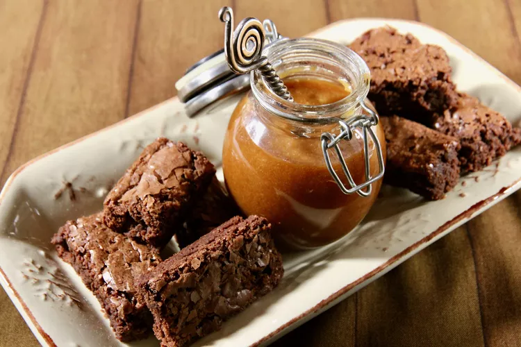

Creamy Manjar (Dulce-de-leche)

Description
Dulce de leche is a sweet and thick caramel-like sauce or spread that originated in Latin America. The name translates to "sweet milk" in Spanish. It is made by slowly heating sweetened condensed milk or evaporated milk until it undergoes a Maillard reaction, resulting in a rich, creamy, and caramelized flavor.
The traditional method involves simmering the milk and sugar mixture for an extended period, often several hours, until it thickens and develops a golden-brown color. The consistency of dulce de leche can vary, ranging from a pourable sauce to a spreadable, thick caramel.
Dulce de leche is widely used in desserts, pastries, and as a topping for ice cream, pancakes, waffles, and more. It is a versatile and beloved sweet treat in many Latin American countries, with variations in preparation and regional preferences.
Ingredients
- 1 gallon whole milk
- 4 cups white sugar
- 1 cup granular sucralose sweetener
- 2 teaspoons vanilla extract
- 2 teaspoons baking soda
- 2 tablespoons water
- 1 pinch salt
Steps
- Combine milk, sugar, sweetener, and vanilla in the biggest pot you have. Place over medium heat and stir until sugar dissolves. Increase heat and bring to a rolling boil.
- As soon as it boils, combine water and baking soda in a small bowl and stir to dissolve; don't worry if it doesn't dissolve completely.
- Remove pot from the stove and place in the sink. Add baking soda mixture and stir vigorously as milk will expand rapidly-be prepared! When the mixture returns to its original volume, return the pot to the stove and bring to a very brisk simmer. It may concern you that it will scorch, but it should be practically boiling. Cook, checking and stirring occasionally, until it turns a deep golden brown, about 1 hour.
- After the mixture has turned dark caramel in color, check it more frequently. The longer you cook it after the color change, the thicker it will be. For a consistency similar to caramel, cook for another 15 minutes. For a thicker, spreadable consistency, cook for another 20 to 25 minutes. For a candy-like consistency, cook it even longer. Just remember that it will thicken up tremendously after cooling.
- Once you're ready, pour the caramel into a plastic container with a lid, or pour into jars. It can be kept without refrigeration, but with refrigeration it is good for many weeks.